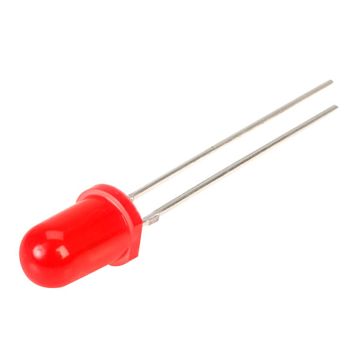
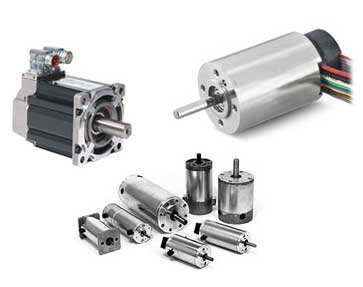

Embedded Programming
In this webpage I will be showing you the basics of embedded programming using an Arduino Board.
What is Embedded Programming?
Embedded Programming refers to the programming of embedded systems. Embedded systems are computer systems that have a dedicated function within a larger electronic or mechanical system to perform specific tasks.
Arduino Fundamentals
The embedded system device I will be teaching you about is the Arduino Board. The Arduino Board is huge in popularity for hobby makers and for rapid prototyping.
Hardware
There are a few types of Arduino Boards but the one I will talk about is the humble Arduino UNO. It's the most basic Arduino Board and its Atmel Atmega328P processor will be sufficient for 90 percent of your projects. Here are the specifications for the Arduino UNO and an image to help visualise the board layout.


Above you can see the specifications of the UNO Board. The important specs to take note of are:
- Operating Voltage.
- The number of Digital I/O Pins
- The number Analog Input Pins
Operating Voltage
This refers to the voltage that the Arduino Board can output at it's output pins. This is important when choosing appropriate components for your project. For example, a large DC motor may not be able to operating on 5V, so you might have to consider using a smaller motor or using a separate power source.
Digital I/O Pins
Digital I/O pins are the pins that you can send or receive signals from. Knowing the number of I/O pins your board has is important as sometimes the number of output devices (i.e. LEDS, Buzzers, Sensors) may exceed the number of I/O pins on your Board, in which case, you may want to reconsider your project design by excluding certain components or using a multiplexer.
Analog Input Pins
Analog Input Pins are pins that can receive analog signals from components such as proximity or temperature sensors. They are the pins that you use whenever you need to receive any analog signal and convert them to digital signals. Knowing the number of Analog Input Pins on your board is important for the same reason I mentioned for Digital I/O pins.
Digital vs Analog
Before we start programming our Arduino Board, a quick lesson on Digital Electronics.
Digital computing refers to logic that uses discrete values or digits, thus the name "Digital". Most commonly used are 1's and 0's.
Analog computing uses continuous values that can have a range of values. For example, the temperature of a room is an analog value as the value can be 25 degrees, or 25.1 degrees, or 25.123 degrees. There are an infinite amount of values it can take on.
Here's a comparison between a digital signal and an analog one.

As you can see, the analog signal has values from -5V to 5V, and the digital signal only has values of 0V or 5V. Our Arduino Board mainly uses digital signals to do it's computing.
Arduino I/O
Now, we can start looking at the Arduino's I/O, or Input/Output. Let's start with digital outputs. As mentioned before, the Arduino deals with digital signals, and in this case, it's output pins can give two outputs. Either a "Logic 1 (HIGH)", or a "Logic 0 (LOW)". The HIGH and LOW refer to two discrete voltages. The LOW will be 0 Volts, and the HIGH will be 5 Volts.
Now what does this all mean? Put simply, I can program the Arduino to give a Logic HIGH at one of its output pins, and if I measure the voltage at that pin, it'll be 5 Volts. That's great, now I can use this 5 Volts to power components like LEDs.
Similarly, I can set the Arduino Board's pins as input pins, so that it can detect if there is 5 Volts going to that pin from an external source like a switch.
The Arduino Board also has some analog input pins. These can be used to detect analog signals such as temperature.
Some common input devices are:
| Device | Analog/Digital | Function | Image |
|---|---|---|---|
| Switches, Push Buttons etc. | Digital | Mechanism used to toggle input logic |  |
| Temperature Sensor | Analog | Measures the temperature via measuring voltage across a diode |  |
| Ultrasonic Distance Sensor | Analog | Measures distance by sending ultrasonic pulses and measures the time taken for the sound to return |  |
Some common output devices include:
| Device | Analog/Digital | Function | Image |
|---|---|---|---|
| LED (Light Emitting Diode) | Digital | A special kind of diode that emits light |  |
| RGB LED | Digital | An LED that can emit the colours Red, Green and Blue to produce different colours |  |
| Motors (DC, Servo, Stepper) | Can be either | Outputs rotary motion, either continuous or discrete. |  |
Arduino Programming
I use the Arduino IDE to write and upload code to the Arduino Board.

This is what the IDE looks like when you launch it, and the first thing you need to do is make sure that you've configured the IDE to upload it to your specific Arduino Board model, in this case it's the UNO.

The IDE helps you out a bit by separating the setup and loop functions and very kindly states what they are used for. All of your setup code goes between the curly brackets of the setup function, and the main code goes into the loop function to be repeated over and over again.
Blinking an LED
Let's start with a simple program to blink an LED. This is a good demonstration of some basic commands:
- pinMode(): This configures the pins to be input or output
- digitalWrite(): This sends a logic HIGH or LOW to a specified pin
- digitalRead(): Reads the value from a specified pin, either HIGH or LOW
- delay(): Pauses the program for a specified time (in milliseconds)

- Take note of the syntax, all code inside a function has to be within the curly brackets
- After each line of code, put a semicolon (;) at the end to denote the end of the line
- Functions and commands have to be spelt correctly. pinMode should have a capitalised "M", OUTPUT should be capitalised
Now we can click the tick on the top left hand corner to verify the code and see if it compiles.
Simulation
After writing your program, you'd want to test it out to see if it works. And instead of wiring up your circuit, it is often easier to use a simulation software to see the output of your program.
TinkerCAD
TinkerCAD is a webapp that can be used for designing and simulating circuits, along with many other uses such as CAD.
Now that you know how to simulate your program, let's try a similar program with more LEDs. This was part of assignment 12 of the module.
This is a program that flashes three different coloured LEDs one after another, resembling a traffic light.
Programming with Input Devices
Let's try something slightly more challenging. As part of assigment 12, I had to write a program that flashes the LEDs when a push button is pressed, and only turns off when the button is pressed again. The end result looks like this:
This program is deceivingly difficult and seems easy at first, but a little trial and error will have you scratching your head if you're still a novice at programming.
The code works like this. I have a variable called counter, which keeps track of how many times the button has been pushed. This is so the Arduino Board knows if the button has been pushed once, so it can turn on the LEDs, or if it's the second time, at which it will turn off the LEDs.
I assign the value at pin 5 to the sw1 variable, and when sw1 is high, it will toggle the counter value. The rest is simple if else statements.
Adding a delay is also important to give the Board time to register that the button has been released.
Programming complex sequences
For this program, the LEDs are initially turned off. Pressing the button once turns on the Yellow LED, pressing again turns on the Green LED, and pressing again turns on the Red LED. Finally, pressing again will sequentially turn on and off all LEDs before returning to the initial state.
Here's the code I used to program the 5 states. It's a bit complex to cover in this webpage but if you want to try it out, it's here nevertherless.


Practical Breadboarding
After testing your program with the simulator, you're gonna want to put it all together, so let's wire up our circuits, and since we've already done the testing and troubleshooting, we can be fairly confident that they will work as expected.
Simple LED flashing
Traffic Light
Push Button Input
One Button - Five States
All this is just a taste of what you can accomplish with embedded programming. For my final project, embedded programming is very crucial and I will go into more details about different actuators over on that webpage. Happy coding!